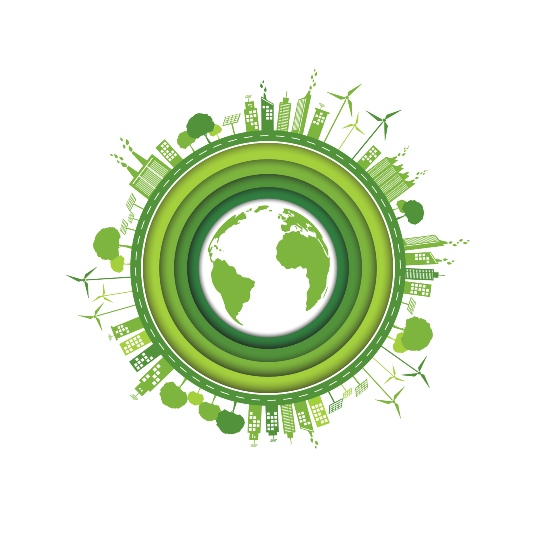
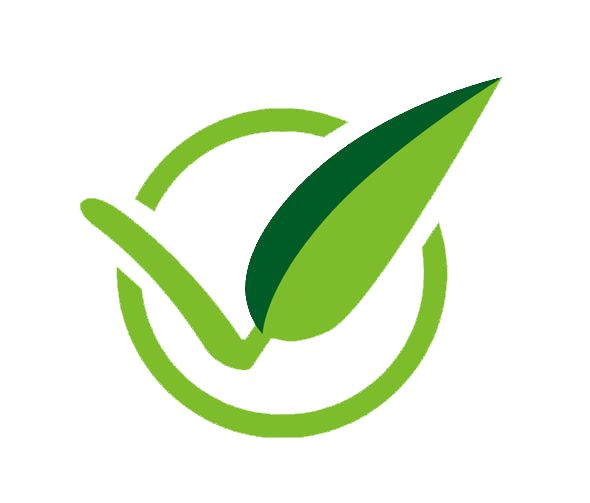

Projects
Volunteer Management for Sustainable Events
Our web platform connects event organizers, organizations, and engaged citizens to make volunteer recruitment, coordination, and management easier. Designed to minimize environmental impact, the application streamlines the clean-up of public spaces at both fixed-location events (concerts, festivals, and fairs) and large sporting events that cover extensive routes.

What does our platform offer?
For organizers and organizations
Publish events, create and distribute work zones or checkpoints, manage waiting lists, and intelligently assign tasks based on volunteers' availability and accessibility needs.
For volunteers
An intuitive digital space to register, create profiles with interests and mobility needs, sign up for activities, review participation history, and use digital QR-code credentials for quick and secure check-in at each post.
For administrators
Global oversight tools to review registrations, validate profiles, audit assignments, and generate detailed reports and statistics to assess each activity's success and waste reduction.
We encourage civic participation and digital sustainability through an accessible interface that works on any device and helps build cleaner, more responsible events.
Future projects with room to grow
Corporate Eco-Events and CSR: Expanding into Corporate Volunteer Programs
This project evolves the platform, initially designed for individual citizens, to natively include companies and corporations interested in advancing their Corporate Social Responsibility (CSR) policies.
Goal: Enable businesses to sponsor events or mobilize teams of employee volunteers to clean and maintain public spaces, while providing official environmental impact metrics.
New corporate participant: Companies can register, purchase or sponsor event packages, and sign up entire workforces at once.
CSR Sustainability Dashboard: Automatic generation of digitally signed certificates showing offset carbon emissions and tonnes of waste removed, for companies to use in their sustainability reports.

GreenLogistics & IoT: Waste Sensors and Dynamic Task Assignment
This project takes the platform further with advanced technology based on the Internet of Things (IoT) and real-time geolocation to improve on-site operations during large events.
Goal: Automatically detect waste build-up at checkpoints using physical sensors and dynamically redirect volunteers to the areas that need them most.
Smart bins with sensors: Bins and checkpoints equipped with fill-level sensors send automatic alerts to the platform when they exceed a set threshold.
AI reassignment and geofencing: If unexpected waste builds up at a checkpoint, the system uses app geolocation to find the nearest volunteers and reassign tasks automatically.
Proximity-based attendance validation: A volunteer's QR code is linked to the checkpoint's GPS radius to confirm attendance automatically, without constant manual supervision.
